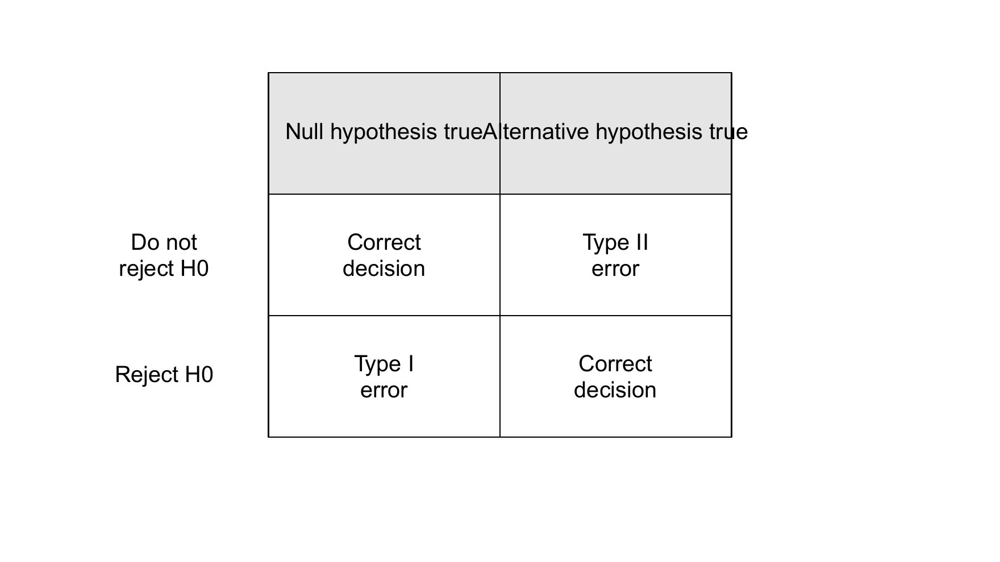
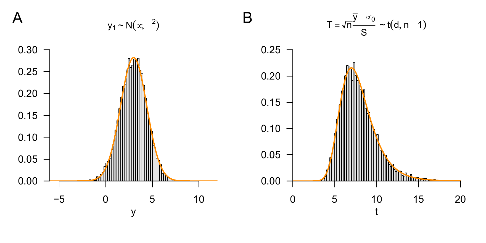
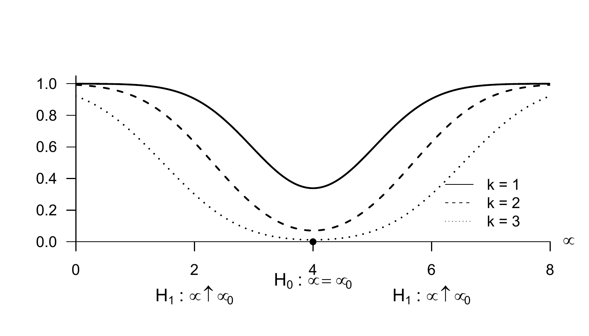
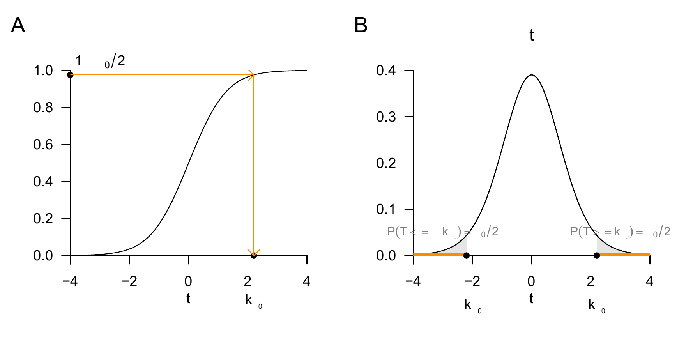
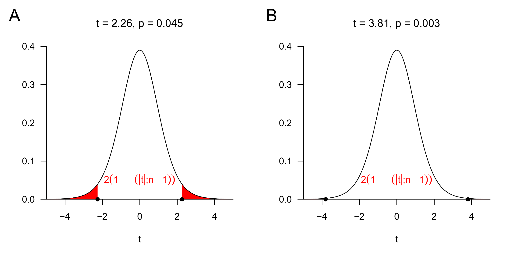
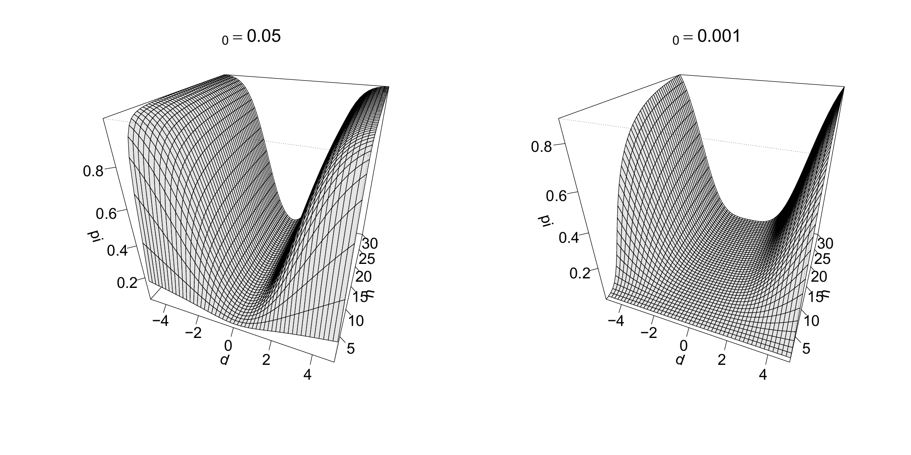
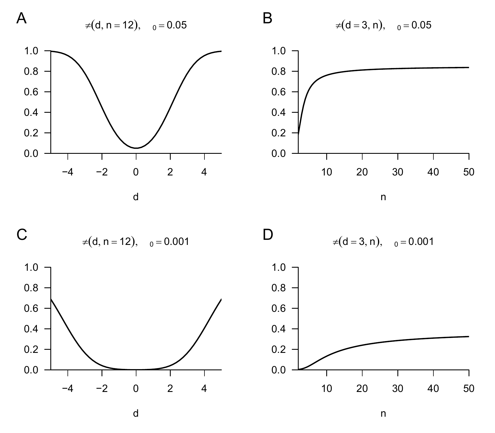
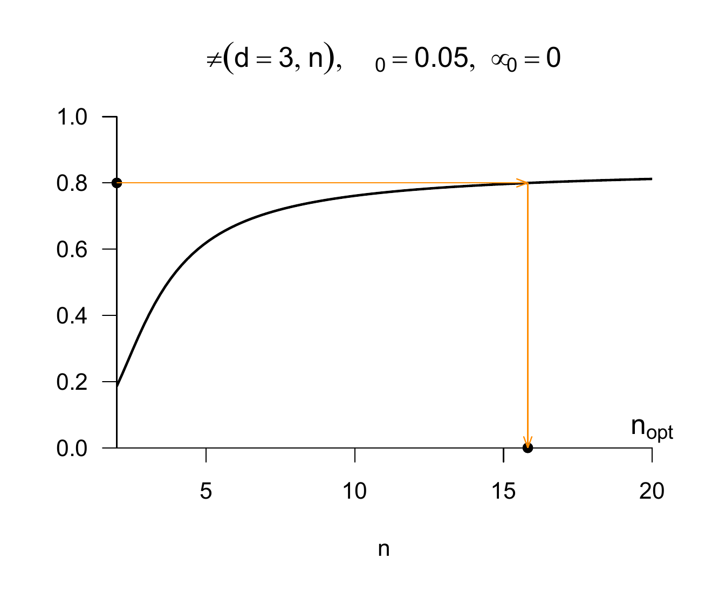
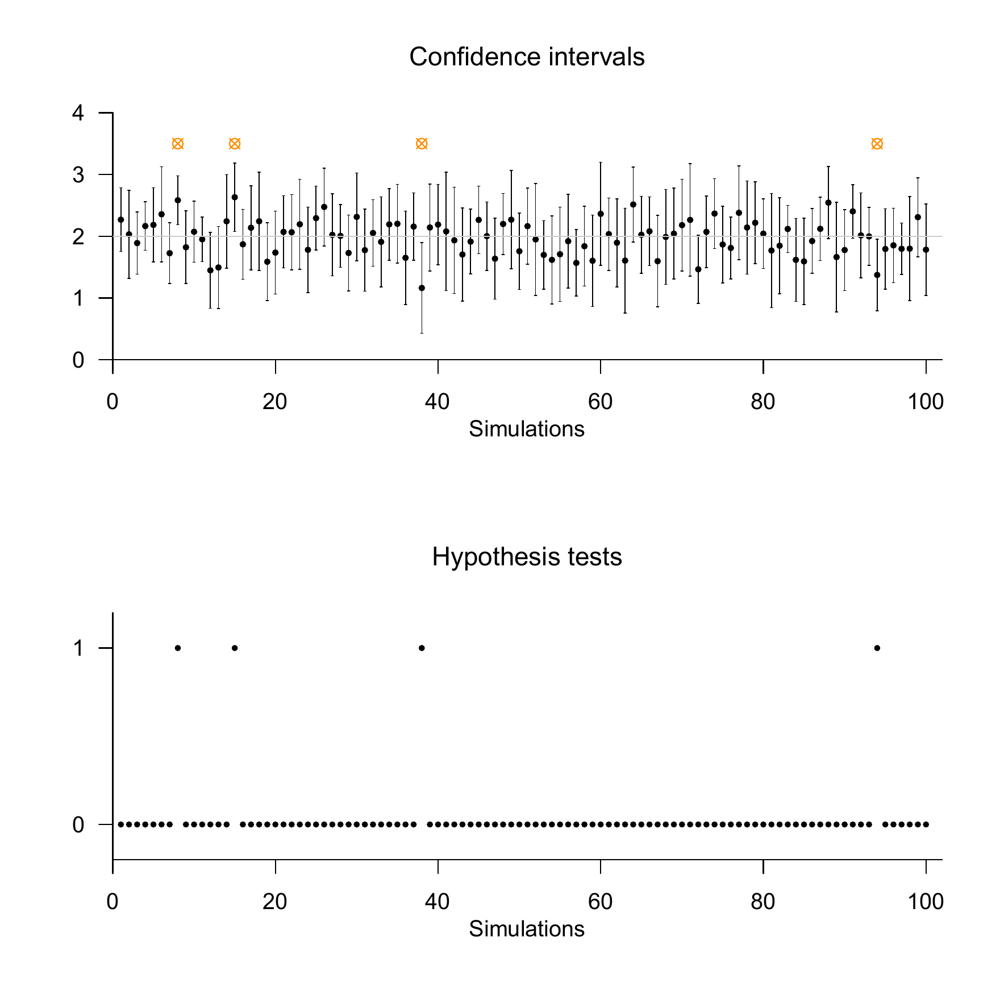

# model parameters
n = 12 # number of data points
mu = 0 # true, but unknown, expectation parameter
sigsqr = 2 # true, but unknown, variance parameter
# test parameters
mu_0 = 0 # null-hypothesis parameter, here \mu = \mu_0
alpha_0 = 0.05 # significance level
k_alpha_0 = qt(1-alpha_0/2,n-1) # critical value
# simulation of test-size control
set.seed(1) # random-number generator seed
nsim = 1e6 # number of simulations
phi = rep(NaN,nsim) # test-decision array
for(j in 1:nsim){ # simulation iterations
y = rnorm(n, mu, sqrt(sigsqr)) # y_i \sim N(\mu,\Sigma), i = 1,...,n
y_bar = mean(y) # sample mean
s = sd(y) # sample standard deviation
Tee = sqrt(n)*((y_bar - mu_0)/s) # one-sample t-test statistic
if(abs(Tee) > k_alpha_0){ # test 1_{\vert t \vert >= k_alpha_0}
phi[j] = 1 # reject the null hypothesis
} else {
phi[j] = 0 # do not reject the null hypothesis
}
}33 Hypothesis tests
The basic logic of frequentist hypothesis tests can be sketched using the normal distribution model. One assumes that an observed dataset is a realization of a sample \(y_1,...,y_n \sim N(\mu,\sigma^2)\) and computes, based on the dataset, a test statistic, for example the sample mean standardized by the sample standard deviation and sample size, \(\sqrt{n}\frac{\bar{y}}{s}\).
One then asks how likely it would be to observe the observed or a more extreme value of the test statistic under the assumption of a null model. Intuitively, a null model is a probability distribution model in which no “interesting effect” is present, for example \(\mu = 0\) in the normal distribution model. The concept of probability is, of course, to be understood frequentistically, that is, as an idealized relative frequency one would obtain if many sample realizations of the null model were generated. Depending on the underlying frequentist inference model and the test statistic under consideration, it may be possible to determine this probability exactly.
If the probability of observing the observed or a more extreme value of the test statistic under the null model is large, one intuitively concludes that “it is quite plausible that the null model generated the data”. In scientific jargon, this is called a “statistically non-significant result”. If the probability of observing the observed or a more extreme value of the test statistic under the null model is small, one intuitively concludes that “it is not very plausible that the null model generated the data”. In this case, scientific jargon speaks of a “statistically significant result”.
As always in frequentist statistics, after carrying out such a procedure one does not know whether, in the present case, the null model or another model actually generated the data. One only knows how often one would be right or wrong on average with this procedure if all assumptions held and the procedure were repeated very often.
In the following sections, we formalize these intuitive ideas. It is important to distinguish between hypotheses in the sense of frequentist inference and the general concept of a scientific hypothesis. Stating a scientific hypothesis by no means implies the necessity of a frequentist hypothesis test. It merely means that, in quantitative work, uncertainty should be quantified and communicated in a meaningful way using observed data relevant to the hypothesis. Frequentist hypothesis tests are only one, albeit very popular, way of doing this. It should already be noted here that “null-hypothesis significance testing”, as we present it below, is scientifically controversial (see, for example, Amrhein & Greenland (2018) and McShane et al. (2019)).
33.1 Test hypotheses and tests
In the context of a frequentist hypothesis test, the concept of a frequentist inference model (cf. Definition 30.1) is first extended by so-called test hypotheses to form a test scenario. We use the following definition.
Definition 33.1 (Test hypotheses and test scenario) Given a frequentist inference model with sample \(y\), outcome space \(\mathcal{Y}\), and parameter space \(\Theta\), let \(\{\Theta_0,\Theta_1\}\) be a partition of the parameter space such that \[\begin{equation} \Theta = \Theta_0 \cup \Theta_1 \mbox{ and } \Theta_0 \cap \Theta_1 = \emptyset. \end{equation}\] Then a test hypothesis is a statement about the true, but unknown, parameter \(\theta\) with respect to the subsets \(\Theta_0\) and \(\Theta_1\) of the parameter space. Specifically,
- \(\theta \in \Theta_0\) is called the null hypothesis and
- \(\theta \in \Theta_1\) is called the alternative hypothesis.
For simplicity, \(\Theta_0\) and \(\Theta_1\) themselves are also referred to as the null hypothesis and alternative hypothesis, respectively. The unit consisting of a frequentist inference model and test hypotheses is called a test scenario.
Depending on the structure of \(\Theta_0\) and \(\Theta_1\), one first distinguishes between simple and composite test hypotheses.
Definition 33.2 (Simple and composite test hypotheses) For the test hypotheses \(\Theta_i\) with \(i = 0,1\):
- If \(\Theta_i\) contains only a single element, then \(\Theta_i\) is called simple.
- If \(\Theta_i\) contains more than one element, then \(\Theta_i\) is called composite.
Because, by assumption, the true, but unknown, parameter \(\theta\) determines the distribution \(\mathbb{P}_\theta\) of the sample, a simple test hypothesis fixes the sampling distribution to exactly one distribution. A composite test hypothesis, by contrast, corresponds to a set of possible sampling distributions. An example of a simple test hypothesis in a test scenario with parameter space \(\Theta := \mathbb{R}\) is \[\begin{equation} \Theta_0 := \{0\}. \end{equation}\] The corresponding composite alternative hypothesis is then \[\begin{equation} \Theta_1 = \mathbb{R} \setminus \{0\}. \end{equation}\] The null hypothesis, that is, the statement “\(\theta \in \Theta_0\)”, corresponds to the statement “\(\theta = 0\)”, because \(\Theta_0\) contains only the single element 0.
If the parameter space of a test scenario is one-dimensional, one further distinguishes between one-sided and two-sided test hypotheses.
Definition 33.3 (One-sided and two-sided test hypotheses) Given a test scenario with one-dimensional parameter space \(\Theta := \mathbb{R}\) and \(\theta_0 \in \Theta\), composite null hypotheses of the form \(\Theta_0 := ]-\infty,\theta_0]\) or \(\Theta_0 := [\theta_0,\infty[\) are called one-sided null hypotheses and are also written as \(H_0:\theta \le \theta_0\) and \(H_0 : \theta \ge \theta_0\), respectively. The corresponding alternative hypotheses have the form \(\Theta_1 := ]\theta_0,\infty[\) and \(\Theta_1:= ]-\infty, \theta_0[\), also written as \(H_1:\theta>\theta_0\) and \(H_1:\theta < \theta_0\), respectively. For a simple null hypothesis of the form \(\Theta_0 := \{\theta_0\}\), also written as \(H_0:\theta = \theta_0\), the alternative hypothesis \(\Theta_1 := \Theta \setminus \{\theta_0\}\), also written as \(H_1:\theta \neq \theta_0\), is called a two-sided alternative hypothesis.
Against the background of a test scenario, we now define the concept of a test.
Definition 33.4 (Test) Given a test scenario, a test is a map \(\phi\) from the sample outcome space \(\mathcal{Y}\) to the set \(\{0,1\}\), that is, \[\begin{equation} \phi: \mathcal{Y} \to \{0,1\}, y \mapsto \phi(y), \end{equation}\] where
- \(\phi(y) = 0\) represents not rejecting the null hypothesis and
- \(\phi(y) = 1\) represents rejecting the null hypothesis.
The concept of a test is not trivial because tests, like estimators and confidence intervals, are themselves random variables as functions of the sample variables. Strictly speaking, tests are therefore defined on random-vector spaces. For simplicity, Definition 33.4 considers a concrete realization \(y \in \mathcal{Y}\) of the sample \(y\), which is mapped by \(\phi\) to the set \(\{0,1\}\). Against this background, the function value \(\phi(y)\) of \(\phi\) is a realization of the random variable \(\phi(y)\).
In applications, one is often interested in tests that have a particular structure. We formalize this structure under the term standard tests.
Definition 33.5 (Standard test) Given a test scenario, a standard test \(\phi\) is defined as the composition of a test statistic \[\begin{equation} \gamma : \mathcal{Y} \to \Gamma \end{equation}\] and a decision rule \[\begin{equation} \delta : \Gamma \to \{0,1\} \end{equation}\] and can therefore be written as \[\begin{equation} \phi := \delta \circ \gamma : \mathcal{Y} \to \{0,1\}. \end{equation}\]
As above, note that in Definition 33.5 the test statistic is a function of the sample variables, that is, of random variables, which we have defined here as a function of the values of these random variables in \(\mathcal{Y}\). Likewise, the decision rule is a function of the random test statistic, which we have also written as a function of the values of this random variable with outcome space \(\Gamma\). In a test scenario, test statistic and decision rule are therefore random variables. Accordingly, if \(y\) is a realization of the sample \(y\), \(\gamma(y) \in \Gamma\) is a realization of \(\gamma(y)\) and \((\delta \circ \gamma)(y)\) is a realization of \((\delta \circ \gamma)(y)\).
The distribution-theoretic properties of a test result from the distribution-theoretic properties of the corresponding frequentist inference model and hence, in particular, from the distribution of the sample variables. Important bridges between these two levels are the concepts of the critical region and the rejection region of a test.
Definition 33.6 (Critical region of a test) Given a test scenario and a test \(\phi\), the set \[\begin{equation} K := \{y \in \mathcal{Y} |\phi(y) = 1 \} \subset \mathcal{Y}, \end{equation}\] that is, the subset of the outcome space \(\mathcal{Y}\) of the sample \(y\) for which the test takes the value \(1\), is called the critical region of the test.
Against the background of Definition 33.6, the random events \(\{y\in K\}\) and \(\{\phi(y) = 1\}\), that is, the event that the sample takes a value in the critical region of the test and the event that the test takes the value 1, are equivalent and thus have the same probability. Thus, asking for the probability that a test takes the value \(1\), that is, that the null hypothesis is rejected, is exactly the same as asking for the probability that the sample takes a value in the critical region of the test. Since the distribution of the sample is assumed to be known, this probability of rejecting the null hypothesis can be determined from it. If one has a standard test, the same consideration also applies directly to the test statistic placed between sample and test. This leads to the following definition.
Definition 33.7 (Rejection region of a standard test) Given a test scenario and a standard test \(\phi\) with test statistic \(\gamma\), the set \[\begin{equation} A := \{\gamma(y) \in \Gamma |\phi(y) = 1 \} \subset \Gamma, \end{equation}\] that is, the subset of the outcome space \(\Gamma\) of the test statistic for which the test takes the value 1, is called the rejection region of the test.
As noted for the critical region, the events \(\{\phi(y) = 1\}\) and \(\{\gamma(y) \in A\}\) are equivalent and therefore have the same probability. Overall, for a standard test, Definition 33.6 and Definition 33.7 imply \[\begin{equation} \{y\in K\} \Leftrightarrow \{\gamma(y) \in A\} \Leftrightarrow \{\phi(y) = 1\} \end{equation}\] and \[\begin{equation} \mathbb{P}_{\theta}\left(\{y\in K\}\right) = \mathbb{P}_{\theta}\left(\{\gamma(y) \in A\}\right) = \mathbb{P}_{\theta}\left(\{\phi(y) = 1\}\right). \end{equation}\] The subscript \(\theta\) indicates that the corresponding distributions are determined by the parameter of the sampling distribution.
In applications, the general form of the decision rule of a standard test given in Definition 33.5 is usually based on whether an observed test statistic with outcome space \(\Gamma := \mathbb{R}\) exceeds or falls below a particular so-called critical value \(k\in \mathbb{R}\). This leads to the concepts of one-sided and two-sided critical-value based tests.
Definition 33.8 (Critical-value based tests) A critical-value based test is a standard test whose decision rule \(\delta\) depends on a critical value \(k\) of a test statistic with outcome space \(\mathbb{R}\). Specifically,
- a one-sided critical-value based test is of the form \[\begin{equation} \phi : \mathcal{Y} \to \{0,1\}, y \mapsto \phi(y) := 1_{\{\gamma(y) \ge k\}} = \begin{cases} 1 & \gamma(y) \ge k \\ 0 & \gamma(y) < k \end{cases}, \end{equation}\]
- a two-sided critical-value based test is of the form \[\begin{equation} \phi : \mathcal{Y} \to \{0,1\}, y \mapsto \phi(y) := 1_{\{|\gamma(y)| \ge k\}} = \begin{cases} 1 & |\gamma(y)| \ge k \\ 0 & |\gamma(y)| < k \end{cases}. \end{equation}\]
With the definition of critical-value based tests, the practical implementation of a hypothesis test is now outlined. As always in frequentist inference, one first assumes a frequentist inference model for the observed data, that is, one assumes that the data are a realization of a sample. Based on this realization, one computes a test statistic and finally compares it with a critical value to either not reject or reject the null hypothesis. In the next section, we ask how, against the background of null and alternative hypotheses, the critical value of a critical-value based test can be determined so that good test decisions are made in the sense of frequentist probability.
33.2 Test quality criteria and test construction
The fact that, in a test scenario, the true, but unknown, parameter may lie in the null-hypothesis or alternative-hypothesis region, while the null hypothesis can either be rejected or not rejected based on the value of the test, implies that a test decision can be correct or incorrect. The following definition first clarifies the terminology.
Definition 33.9 (Correct test decisions and test errors) Given a test scenario and a test, there are two forms of correct test decision: not rejecting the null hypothesis, \(\phi(y) = 0\), when the null hypothesis \(\theta \in \Theta_0\) holds, and rejecting the null hypothesis, \(\phi(y) = 1\), when the alternative hypothesis \(\theta \in \Theta_1\) holds. Likewise, there are two types of test error. Rejecting the null hypothesis, \(\phi(y) = 1\), when the null hypothesis \(\theta \in \Theta_0\) holds is called a type I error. Not rejecting the null hypothesis, \(\phi(y) = 0\), when the alternative hypothesis \(\theta \in \Theta_1\) holds is called a type II error.

Figure 33.1 gives an overview of the possible correct test decisions and test errors when carrying out a test. Naturally, one would prefer to make a correct test decision. The decisive tool for constructing tests that are as good as possible against the frequentist background of the test scenario is the so-called power function.
Definition 33.10 (Power function) Given a test scenario and a test \(\phi\), the power function of \(\phi\) is defined as \[\begin{equation} q_{\phi} : \Theta \to [0,1], \theta \mapsto q_{\phi}(\theta) := \mathbb{P}_\theta(\phi(y) = 1). \end{equation}\] For \(\theta \in \Theta_1\), \(q_\phi\) is also called the sensitivity function or power function.
Note that \(\mathbb{P}_\theta\) in Definition 33.10 denotes the distribution of the random variable \(\phi(y)\) under the assumption that the distribution of \(y\) is determined by \(\theta\). For each \(\theta \in \Theta\), \(q_\phi\) therefore gives the probability that the null hypothesis is rejected by the test \(\phi\). Using the concepts of the critical region (cf. Definition 33.6) and the rejection region (cf. Definition 33.7), these probabilities satisfy \[\begin{equation} \mathbb{P}_\theta(\phi(y) = 1) = \mathbb{P}_\theta(\gamma(y) \in A) = \mathbb{P}_\theta (y \in K). \end{equation}\] The power function is specific to a given test. If the test changes, for example because a different critical value is chosen in a critical-value based test, the above probabilities and therefore the power function change.
Using the power function, test construction proceeds according to the following considerations. Ideally, one would have a test \(\phi\) with \[\begin{equation} q_\phi(\theta) = \mathbb{P}_\theta(\phi(y) = 1) = 0 \mbox{ for } \theta \in \Theta_0 \mbox{ and } q_\phi(\theta) = \mathbb{P}_\theta(\phi(y) = 1) = 1 \mbox{ for } \theta \in \Theta_1. \end{equation}\] The test decision of such a test would be correct with probability 1, because such a test rejects the null hypothesis with probability 0 when it holds and rejects it with probability 1 when it does not hold. More generally, small values of \(q_\phi\) for \(\theta \in \Theta_0\), that is, small probabilities of rejecting the null hypothesis when it holds, and large values of \(q_\phi\) for \(\theta \in \Theta_1\), that is, large probabilities of rejecting the null hypothesis when it does not hold, are favorable for minimizing test errors. However, dependencies generally exist between the values of the power function for \(\theta \in \Theta_0\) and \(\theta \in \Theta_1\), as the following examples illustrate.
Example (A) Let \(\phi_a\) be a test defined by \[\begin{equation} \phi_a: \mathcal{Y} \to \{0,1\}, y \mapsto \phi_a(y) := 0. \end{equation}\] Thus, \(\phi_a\) is a test that never rejects the null hypothesis, regardless of the observed data. For \(\phi_a\), \[\begin{equation} q_{\phi_a}(\theta) = \mathbb{P}_\theta(\phi(y) = 1) = 0 \mbox{ for } \theta \in \Theta_0. \end{equation}\] However, for \(\phi_a\) it also automatically holds that \[\begin{equation} q_{\phi_a}(\theta) = \mathbb{P}_\theta(\phi(y) = 1) = 0 \mbox{ for } \theta \in \Theta_1. \end{equation}\] Thus, \(\phi_a\) has minimal sensitivity for detecting the fact that the alternative hypothesis holds.
Example (B) Conversely, let \(\phi_b\) be a test defined by \[\begin{equation} \phi_b : \mathcal{Y} \to \{0,1\}, y \mapsto \phi_b(y) := 1. \end{equation}\] Thus, \(\phi_b\) is a test that always rejects the null hypothesis, regardless of the observed data. For \(\phi_b\), \[\begin{equation} q_{\phi_b}(\theta) = \mathbb{P}_\theta(\phi(y) = 1) = 1 \mbox{ for } \theta \in \Theta_1. \end{equation}\] Thus, \(\phi_b\) is maximally sensitive to the alternative hypothesis being true. However, for \(\phi_b\) it also automatically holds that \[\begin{equation} q_{\phi_b}(\theta) = \mathbb{P}_\theta(\phi(y) = 1) = 1 \mbox{ for } \theta \in \Theta_0, \end{equation}\] and \(\phi_b\) therefore always rejects the null hypothesis when it holds and, in this sense, generates many false-positive results.
Against the background of these examples, the goal of test construction must be to find an appropriate balance between small values of the power function when the null hypothesis holds and large values when the alternative hypothesis holds. The most popular way to achieve this is to choose, in a first step, a small value \(\alpha_0 \in [0,1]\) and ensure that \[\begin{equation}\label{eq:significance} q_\phi(\theta) \le \alpha_0 \mbox{ for all } \theta \in \Theta_0, \end{equation}\] that is, that the probability of rejecting the null hypothesis when it holds, and hence the probability of a type I error, is at most \(\alpha_0\). Conventional values for such an \(\alpha_0\) are \(\alpha_0 := 0.001\) and \(\alpha_0 := 0.05\). Among all tests, and, when sample sizes are optimized, among all frequentist inference models, that satisfy \(\eqref{eq:significance}\), one then seeks, in a second step, a test for which \(q_\phi(\theta)\) is as large as possible for \(\theta \in \Theta_1\). This two-step approach is not the only possible one; one could, for example, minimize a linear combination of type I and type II errors simultaneously. However, the sketched two-step approach is the most popular in applications, and we therefore restrict ourselves to it in what follows. Inequality \(\eqref{eq:significance}\) motivates the definitions of a level-\(\alpha_0\) test, the significance level \(\alpha_0\), and the test size \(\alpha\).
Definition 33.11 (Level-\(\alpha_0\) test, significance level \(\alpha_0\), and test size \(\alpha\)) Given a test scenario, a test \(\phi\), its power function \(q_\phi\), and \(\alpha_0 \in [0,1]\), \(\phi\) is called a level-\(\alpha_0\) test if \[\begin{equation} q_\phi(\theta) \le \alpha_0 \mbox{ for all } \theta \in \Theta_0. \end{equation}\] If \(\phi\) is a level-\(\alpha_0\) test, the value \(\alpha_0\) is also called the significance level of the test. Furthermore, the number \[\begin{equation} \alpha := \max_{\theta \in \Theta_0} q_\phi(\theta) \end{equation}\] is called the test size of \(\phi\).
According to Definition 33.11, the test size \(\alpha\) is the maximal probability of a type I error, and a test is a level-\(\alpha_0\) test if and only if this maximal probability is less than or equal to the significance level \(\alpha_0\). In applications, it is important to keep the subtle differences between the probability of a type I error, the test size, and the significance level of a test clear. Against the background of the difference between simple and composite null hypotheses (cf. Definition 33.2), one must first distinguish the concepts of type I error probability and test size. For a simple null hypothesis \(\Theta_0\), the test size is always equal to the probability of a type I error, because \[\begin{equation} \alpha := \max_{\theta \in \Theta_0} q_\phi(\theta) = \max_{\theta \in \{\theta_0\}} q_\phi(\theta) = q_\phi(\theta_0) = \mathbb{P}_{\theta_0}(\phi(y) = 1). \end{equation}\] For a composite null hypothesis \(\Theta_0\), there are different probabilities of a type I error depending on the value of \(\theta \in \Theta_0\). The largest of these probabilities is the test size \[\begin{equation} \alpha := \max_{\theta \in \Theta_0} q_\phi(\theta) = \max_{\theta \in \Theta_0} \mathbb{P}_{\theta}(\phi(y) = 1). \end{equation}\] Likewise, the terms significance level \(\alpha_0\) and test size \(\alpha\) should be clearly separated. A significance level is a freely chosen upper bound on the maximal probability of a type I error. The actual maximal probability of a type I error may be identical to it, as in most examples discussed in Section 33.3, but it need not be, for example in multiple testing scenarios with non-independent sample variables. Accordingly, a test is called exact if its test size is identical to its significance level, that is, if \[\begin{equation} \alpha = \alpha_0. \end{equation}\] A test whose test size is smaller than its significance level, that is, \[\begin{equation} \alpha < \alpha_0, \end{equation}\] is called conservative. Finally, a test whose test size is larger than its significance level, \[\begin{equation} \alpha > \alpha_0 \end{equation}\] and which therefore cannot be a level-\(\alpha_0\) test, is called liberal.
p-value
A defining characteristic of a test is its binary range. The result of a test is either \(\phi(y) = 0\), the null hypothesis is not rejected, or \(\phi(y) = 1\), the null hypothesis is rejected. As the final result of a data analysis, the information contained in a dataset is thus maximally compressed. In particular, reporting only the test result suppresses interesting information about the signal-to-noise ratio of the dataset under consideration. For example, it is possible that the null hypothesis is rejected in the context of a critical-value based test because the test statistic exceeded the critical value by only a few decimal places. Conversely, it is equally possible that the null hypothesis is rejected because the test statistic took a value that was a multiple of the critical value. In both cases, the test result \(\phi(y) = 1\) would be identical. In addition to pure test-size control and the reporting of the binary test result, it has therefore become customary for critical-value based tests to consider, based on the observed value of the test statistic, all values of the significance level \(\alpha_0\) for which a level-\(\alpha_0\) test would have returned \(\phi(y) = 1\), that is, for which the null hypothesis would have been rejected. This consideration leads to the following general definition of the so-called p-value, where p stands for probability.
Definition 33.12 (p-value) Let \(\phi\) be a test. The is the smallest significance level \(\alpha_0\) at which the null hypothesis is rejected based on a given value of the test statistic.
Especially in simple application examples, such as the one-sample t-test scenario considered in Section 33.3.1, p-values then reflect the answer to the intuitive question of how likely it would be, in the frequentist sense, to observe the observed or a more extreme value of the test statistic under the assumption of a null model. Reporting p-values is very popular in many areas of basic science, but it is also controversial (cf. Wasserstein et al. (2019)). P-values should not be overinterpreted. Based on what has been said, there is no reason to draw the following fallacies, but we mention them as a precaution: p-values do not quantify the probability that the null hypothesis is true, one cannot conclude from \(\mbox{p} < 0.05\) that the alternative hypothesis holds, and one cannot conclude from \(\mbox{p} \ge 0.05\) that the null hypothesis holds.
Like the value of a test statistic and of a test, p-values quantify the signal-to-noise ratio observed in a given dataset. Nothing less, but also nothing more.
Notes on the choice of null and alternative hypothesis
We conclude this section with some remarks on carrying out hypothesis tests. Against the background of the theory sketched above, the first question in a concrete application is how null and alternative hypotheses should be assigned to the objects of scientific interest, that is, to the scientific hypotheses.
For example, if one wants to carry out a test to decide, in the sense of frequentist inference, whether a particular psychotherapy procedure was effective in a clinical study, the question arises whether the absence of a treatment effect should be formulated as the null or as the alternative hypothesis.
The two-step procedure described above for test construction, in which the test size is first fixed by choosing a significance level and only in a second step the probability of rejecting the null hypothesis when the alternative hypothesis holds is made as large as possible, implies a clear asymmetry in the treatment of null and alternative hypotheses. In this procedure, type I errors are treated as more serious than type II errors.
This suggests a possible strategy for specifying null and alternative hypotheses: the null hypothesis is the scientific hypothesis whose associated test decision is the one for which one especially wants to avoid an error, or whose error probability one primarily wants to control. In science, it is common practice to regard the false confirmation of one’s favored theory, for example the erroneous confirmation that a newly developed psychotherapy procedure is more effective than another, as a more serious error than its false rejection.
Accordingly, the false confirmation of one’s own theory should be a type I error, whereas its false rejection should be classified as a type II error. For the false confirmation of one’s own theory to indeed be a type I error, that is, the rejection of the null hypothesis even though it holds, one’s own theory must be formulated as the alternative hypothesis. The erroneous rejection of the alternative hypothesis is then a type II error.
Intuitively, this yields the following assignment: \[\begin{align*} \begin{split} \mbox{Non-favored scientific hypothesis} & \to \mbox{Null hypothesis} \\ \mbox{Favored scientific hypothesis} & \to \mbox{Alternative hypothesis} \end{split} \end{align*}\]
Hypothesis tests in decision contexts and basic science
Another question is whether one should carry out a hypothesis test at all to evaluate scientific hypotheses. Superficially, hypothesis tests first provide simple binary statements of the form “Given the evidence, the hypothesis is to be rejected or accepted”. Such statements can be useful in concrete decision contexts if a decision actually has to be made. However, frequentist hypothesis tests, as we have seen, are formulated without an explicit decision-utility function, so potential decision costs are not explicitly included in decision making. For this purpose, there are several accessible theories that allow good long-run decisions under uncertainty, see for example Pratt et al. (1995), Puterman (1994), or Kochenderfer et al. (2022).
If one turns away from practically relevant decision contexts to basic science, whose essence is precisely not to establish final truths but to quantify and communicate the extent of uncertainty about the current state of theory, the binarity of the hypothesis-test decision appears, at best, unnecessary and, at worst, grossly misleading. Questions in basic science should therefore, in principle, not be formulated as decision problems.
Despite the widespread view that Bayesian approaches such as positive predictive values or Bayes factors offer advantages here, this is not the case as long as the uncertainty associated with a particular model preference is not communicated clearly. Nevertheless, frequentist hypothesis testing remains very popular even in the basic-science community, sometimes merely under the guise of demands for basic studies with “higher power”. To retain access to the psychological and scientific literature, it is therefore still unavoidable to engage with hypothesis testing, even though it is not particularly meaningful from a basic-science perspective.
33.3 Test examples
33.3.1 One-sample t-test
The application scenario of a one-sample t-test is characterized by considering \(n\) univariate data points of a sample, or group, of randomized experimental units, which are assumed to be realizations of \(n\) independent and identically normally distributed random variables. For the identical univariate normal distributions \(N(\mu,\sigma^2)\) of these random variables, both the expectation parameter \(\mu\) and the variance parameter \(\sigma^2\) are assumed to be unknown. Finally, it is assumed that there is interest in an inferential comparison of the unknown expectation parameter \(\mu\) with a specified value \(\mu_0\) in the sense of a hypothesis test.
There are, however, at least four scenarios that may be of interest. A first case is the scenario of a simple null hypothesis and a simple alternative hypothesis, \[\begin{equation} H_0:\mu = \mu_0 \mbox{ and } H_1: \mu = \mu_1. \end{equation}\] This case is well understood theoretically and forms the basis of the so-called Neyman-Pearson lemma (Neyman & Pearson (1933)). Its practical relevance is rather limited, however, because the alternative hypothesis assumes an exact specification of the expectation parameter. A second case is the scenario of a simple null hypothesis and a composite alternative hypothesis, \[\begin{equation} H_0:\mu = \mu_0 \mbox{ and } H_1:\mu \neq \mu_0. \end{equation}\] In this case, one also speaks of an undirected hypothesis and usually uses a two-sided test. Intuitively, this corresponds to the undirected question of inferential evidence for a difference. This is the case we consider in detail below. Finally, there are at least two scenarios with composite null and alternative hypotheses, for example of the form \[\begin{equation} H_0:\mu \le \mu_0 \mbox{ and } H_1:\mu > \mu_0 \mbox{ or } H_0:\mu \ge \mu_0 \mbox{ and } H_1:\mu < \mu_0. \end{equation}\] In this case, one also speaks of directed hypotheses and usually uses one-sided tests. We do not consider these cases below.
Frequentist inference model
Definition 33.13 (Frequentist inference model of the one-sample t-test) The frequentist inference model of the one-sample t-test is the normal distribution model \[\begin{equation} y_1,...,y_n \sim N(\mu,\sigma^2) \mbox{ with } (\mu,\sigma^2)\in \mathbb{R} \times \mathbb{R}_{>0}. \end{equation}\]
Recall that, from a generative perspective, the normal distribution model corresponds to \[\begin{equation} y_i = \mu + \varepsilon_i \mbox{ with } \varepsilon_i \sim N(0,\sigma^2) \mbox{ for } i = 1,...,n \end{equation}\] (cf. Example 30.5). As seen in Example 30.5, the assumption of independent and identically normally distributed random variables as the basis for modeling the observation of \(n\) data points is equivalent to the assumption that each random variable \(y_i\) modeling a data point is the sum of a fixed, true, but unknown, value \(\mu\) that is constant across random variables and a random-variable- or data-point-specific deviation term \(\varepsilon_i\). As seen, \(\mu\) models the actual effect of interest assumed in the scientific application context. In contrast, \(\varepsilon_i\) models the aspect of data variability that cannot be explained by \(\mu\) but, in the sense of the central limit theorem, results from the summation of infinitely many disturbance influences and therefore remains as uncertainty about the explanation of the data variability by \(\mu\).
Test hypotheses
We consider the case of the one-sample t-test with a simple null hypothesis and a composite alternative hypothesis.
Definition 33.14 (Simple null hypothesis and composite alternative hypothesis of the one-sample t-test) Given the frequentist inference model of the one-sample t-test \[\begin{equation} y_1,...,y_n \sim N(\mu,\sigma^2) \mbox{ with } (\mu,\sigma^2)\in \mathbb{R} \times \mathbb{R}_{>0} \end{equation}\] and let \(\Theta := \mathbb{R}\) be the parameter subspace of the parameter of interest \(\mu\). Then, for the null-hypothesis parameter value \(\mu_0 \in \mathbb{R}\), the simple null hypothesis and the composite alternative hypothesis of the one-sample t-test are \[\begin{equation} \Theta_0 := \{\mu_0\} \Leftrightarrow H_0 : \mu = \mu_0 \mbox{ and } \Theta_1 := \mathbb{R} \setminus \{\mu_0\} \Leftrightarrow H_1 : \mu \neq \mu_0. \end{equation}\]
The simple null hypothesis and the composite alternative hypothesis are parameterized by the value \(\mu_0 \in \mathbb{R}\). Different hypothesis scenarios therefore arise depending on the choice of \(\mu_0\). If, for example, \(\mu_0 := 0\) is chosen, the null hypothesis \(\Theta_0 := \{0\}\) states that the true, but unknown, parameter \(\mu\) is equal to \(0\), and the alternative hypothesis \(\Theta_1 := \mathbb{R} \setminus \{0\}\) states that the true, but unknown, parameter \(\mu\) is not equal to \(0\). If, by contrast, \(\mu_0 := 2\) is chosen, the null hypothesis \(\Theta_0 := \{2\}\) states that the true, but unknown, parameter \(\mu\) is equal to \(2\), and the alternative hypothesis \(\Theta_1 := \mathbb{R} \setminus \{2\}\) states that the true, but unknown, parameter \(\mu\) is not equal to \(2\). In the application context, \(\mu_0\) is therefore a freely chosen, and hence known, parameter of the one-sample t-test, whereas \(\mu\) is, and remains, true but unknown.
Definition of the test statistic
With the one-sample t-test statistic, we now define a test statistic that can serve as the basis of a critical-value based test and whose absolute value can indicate a deviation from the null hypothesis.
Definition 33.15 (One-sample t-test statistic) Given the test scenario of a one-sample t-test with sample \(y_1,...,y_n\), sample mean \(\bar{y}\), sample standard deviation \(S\), and null-hypothesis parameter \(\mu_0\), the one-sample t-test statistic is defined as \[\begin{equation} T := \sqrt{n}\frac{\bar{y} - \mu_0}{S}. \end{equation}\]
The one-sample t-test statistic is evidently very similar to the \(T\) confidence-interval statistic (cf. Definition 32.2). Note, however, that in the case of the one-sample t-test statistic the null-hypothesis parameter \(\mu_0\) need not be identical to the true, but unknown, parameter value \(\mu\) appearing in the \(T\) confidence-interval statistic.
Because the one-sample t-test statistic is central to the one-sample t-test, it is useful to be aware of its intuitive mechanics. In the numerator of the fraction, the difference between the sample mean \(\bar{y}\) and the parameter \(\mu_0\) assumed under the null hypothesis appears first. As already seen, the sample mean is an unbiased estimator of the expectation parameter \(\mu\) of the sample variables. The difference \(\bar{y} - \mu_0\) thus represents an estimate of the deviation of the true, but unknown, expectation parameter from the null-hypothesis parameter and provides evidence, in absolute value, for a deviation from the null hypothesis. Roughly speaking, the numerator \(\bar{y} - \mu_0\) is therefore a measure of the “signal” contained in the sample, understood as deviation from the null hypothesis or as “systematic variability”.
The denominator of the one-sample t-test statistic allows this signal to be expressed in units of the sample standard deviation \(S\). For example, if \(\bar{y} - \mu_0 = 2\) and \(S = 1\), the deviation of the sample mean from the null-hypothesis parameter is two standard deviations. If, by contrast, \(S = 2\), the deviation corresponds to one standard deviation. Moreover, the denominator \(S\) is a measure of the observed data variability and an estimator of the standard deviation \(\sigma\) of the error terms in the generative form of the one-sample t-test model. Roughly speaking, the denominator of the one-sample t-test statistic therefore represents the “noise” contained in the data or their “unsystematic variability”. Overall, the fraction \(\frac{\bar{y} - \mu_0}{S}\) can therefore be interpreted as an estimate of the signal-to-noise ratio of the data.
Finally, in the one-sample t-test statistic, this ratio is weighted by the square root of the sample size, \(\sqrt{n}\). Intuitively, this weighting reflects the fact that a given signal-to-noise ratio can be assigned more validity if it is based on a larger number of observations than if it is based on only a few data points.
Overall, the one-sample t-test statistic thus provides a scalar summary of the evidence contained in the data against the null hypothesis, taking into account both data variability and sample size.
Distribution of the test statistic
For the distribution of the one-sample t-test statistic, the following theorem holds.
Theorem 33.1 (Distribution of the one-sample t-test statistic) Given the test scenario of a one-sample t-test with sample \(y_1,...,y_n\), sample mean \(\bar{y}\), sample standard deviation \(S\), null-hypothesis parameter \(\mu_0\), and one-sample t-test statistic \[\begin{equation} T := \sqrt{n}\frac{\bar{y} - \mu_0}{S}. \end{equation}\] Then \(T\) is a noncentral \(t\) random variable with noncentrality parameter \[\begin{equation} d = \sqrt{n}\frac{\mu - \mu_0}{\sigma} \end{equation}\] and degrees-of-freedom parameter \(n-1\), that is, \(T \sim t(d,n-1)\).
If the null hypothesis holds, the null-hypothesis parameter \(\mu_0\) is identical to the true, but unknown, expectation parameter \(\mu\), and the noncentrality parameter of the distribution of the one-sample t-test statistic takes the value \(d = 0\). If the null hypothesis of the one-sample t-test scenario holds, the one-sample t-test statistic is therefore a \(t\)-distributed random variable with degrees-of-freedom parameter \(n-1\). In Figure 33.2, we visualize the distribution of the one-sample t-test statistic by example for a one-sample t-test scenario with \(n = 12\), true, but unknown, parameters \(\mu = 3\) and \(\sigma^2 = 2\), and null-hypothesis parameter \(\mu_0 = 0\). The parameters of this distribution are \[\begin{equation} d = \sqrt{n}\frac{\mu - \mu_0}{\sigma} = \sqrt{12}\frac{3 - 0}{\sqrt{2}} \approx 7.34 \end{equation}\] and \[\begin{equation} n - 1 = 11. \end{equation}\]

Test definition
We can now define the two-sided one-sample t-test with a simple null hypothesis and composite alternative hypothesis and analyze its power function.
Definition 33.16 (Two-sided one-sample t-test with simple null hypothesis and composite alternative hypothesis) Given the frequentist inference model of the one-sample t-test with simple null hypothesis and composite alternative hypothesis, and let \(T\) denote the one-sample t-test statistic. Then the two-sided one-sample t-test with simple null hypothesis and composite alternative hypothesis is defined as the two-sided critical-value based test \[\begin{equation} \phi : \mathcal{Y} \to \{0,1\}, y \mapsto \phi(y) := 1_{\{|T| \ge k\}} = \begin{cases} 1 & |T| > k \\ 0 & |T| \le k \end{cases}. \end{equation}\]
The two-sided one-sample t-test with simple null hypothesis and composite alternative hypothesis therefore takes the value \(0\) if the absolute value of the one-sample t-test statistic is smaller than the critical value, and it takes the value \(1\) if the absolute value of the one-sample t-test statistic is equal to or larger than the critical value.
Power function
For controlling the test size by choosing a critical value and for determining the power function of this test, the following theorem is central.
Theorem 33.2 (Power function of the two-sided one-sample t-test with simple null hypothesis and composite alternative hypothesis) Let \(\phi\) be the two-sided one-sample t-test with simple null hypothesis and composite alternative hypothesis. Then the power function of \(\phi\) is \[\begin{equation} q_{\phi} : \mathbb{R} \to [0,1], \mu \mapsto q_{\phi}(\mu) := 1 - \Psi(k;d_\mu,n-1) + \Psi(-k;d_\mu,n-1), \end{equation}\] where \(\Psi(\cdot; d_\mu, n-1)\) denotes the CDF of the noncentral \(t\) distribution with noncentrality parameter \[\begin{equation} d_\mu := \sqrt{n}\frac{\mu - \mu_0}{\sigma} \end{equation}\] and degrees-of-freedom parameter \(n-1\).
Proof. The power function of the test under consideration in the present test scenario is defined as \[\begin{equation} q_{\phi} : \mathbb{R} \to [0,1], \mu \mapsto q_{\phi}(\mu) := \mathbb{P}_{\mu}(\phi(y) = 1). \end{equation}\] Because the probability of \(\phi(y) = 1\) is equal to the probability that the associated test statistic lies in the rejection region of the test, we first need the distribution of the test statistic. We have already seen above that the one-sample t-test statistic \(T\) is distributed according to a noncentral \(t\) distribution \(t(d_\mu,n-1)\) with noncentrality parameter \(d_\mu\). The rejection region of the two-sided one-sample t-test is \[\begin{equation} A = \,]-\infty, -k]\, \cup \,]k,\infty[. \end{equation}\] With this rejection region, we obtain \[\begin{align} \begin{split} q_\phi(\mu) & = \mathbb{P}_{\mu}(\phi(y) = 1) \\ & = \mathbb{P}_{\mu}\left(T \in ]-\infty, -k]\, \cup \,]k,\infty[ \right) \\ & = \mathbb{P}_{\mu}\left(T \in ]-\infty, -k]\right) + \mathbb{P}_{\mu}\left(T \in ]k,\infty[ \right) \\ & = \mathbb{P}_{\mu}(T \le - k) + \mathbb{P}_{\mu}(T > k) \\ & = \mathbb{P}_{\mu}(T \le - k) + (1-\mathbb{P}_{\mu}(T \le k)) \\ & = 1 - \mathbb{P}_{\mu}(T \le k) + \mathbb{P}_{\mu}(T \le - k) \\ & = 1 - \Psi(k; d_\mu, n-1) + \Psi(-k;d_\mu,n-1), \end{split} \end{align}\] where \(\Psi(\cdot; d_\mu,n-1)\) denotes the CDF of the noncentral \(t\) distribution with noncentrality parameter \(d_\mu\) and degrees-of-freedom parameter \(n-1\).
In Figure 33.3, we visualize the power function of the two-sided one-sample t-test with simple null hypothesis and composite alternative hypothesis from Theorem 33.2 for \(\sigma^2 = 9\) and \(\mu_0 = 4\) as a function of the critical value \(k\). First, note that the power function as a function of \(\mu\) covers both the scenario in which the null hypothesis holds, \(\mu = \mu_0\), and the scenario in which the alternative hypothesis holds, \(\mu \neq \mu_0\). Second, note that the value of the power function, that is, the probability that the test takes the value 1, increases for both positive and negative deviations of the true, but unknown, expectation parameter \(\mu\) from the null-hypothesis parameter \(\mu_0\). This is due to the fact that the test decision is based on the absolute value of the test statistic. Finally, the exact shape and location of the power function depend on the choice of the critical value \(k\). If this critical value is chosen larger, a larger absolute value of the test statistic is necessary for the test to take the value 1, and the probability of doing so is smaller for otherwise constant parameters than for smaller critical values.

Test-size control
The values of the power function at \(\mu = \mu_0\) in Figure 33.3 give a visual impression of how the critical value controls the test size. The exact determination of the critical value for a desired test size is the content of the following theorem.
Theorem 33.3 (Test-size control for the two-sided one-sample t-test with simple null hypothesis and composite alternative hypothesis) Let \(\phi\) be the two-sided one-sample t-test with simple null hypothesis and composite alternative hypothesis. Then \(\phi\) is a level-\(\alpha_0\) test with test size \(\alpha_0\) if the critical value is defined by \[\begin{equation} k_{\alpha_0} := \Psi^{-1}\left(1 - \frac{\alpha_0}{2}; n-1 \right), \end{equation}\] where \(\Psi^{-1}(\cdot; n-1)\) denotes the inverse CDF of the \(t\) distribution with degrees-of-freedom parameter \(n-1\).
Proof. For the test under consideration to be a level-\(\alpha_0\) test, we must have \(q_\phi(\mu) \le \alpha_0\) for all \(\mu \in \{\mu_0\}\), here \(q_\phi(\mu_0) \le \alpha_0\). Furthermore, the test size of the test under consideration is \(\alpha = \max_{\mu \in \{\mu_0\}} q_\phi(\mu)\), here \(\alpha = q_\phi(\mu_0)\). We therefore have to show that choosing \(k_{\alpha_0}\) guarantees that \(\phi\) is a level-\(\alpha_0\) test with test size \(\alpha_0\). First, for \(\mu = \mu_0\), \[\begin{align} \begin{split} q_\phi(\mu_0) & = 1 - \Psi(k;d_{\mu_0},n-1) + \Psi(-k;d_{\mu_0},n-1) \\ & = 1 - \Psi(k;0,n-1) + \Psi(-k;0,n-1) \\ & = 1 - \Psi(k;n-1) + \Psi(-k;n-1), \\ \end{split} \end{align}\] where \(\Psi(\cdot;d,n-1)\) and \(\Psi(\cdot;n-1)\) denote the CDFs of the noncentral \(t\) distribution with noncentrality parameter \(d\) and degrees-of-freedom parameter \(n-1\), and of the \(t\) distribution with degrees-of-freedom parameter \(n-1\), respectively. Now let \(k := k_{\alpha_0}\). Then \[\begin{align} \begin{split} q_\phi(\mu_0) & = 1 - \Psi(k_{\alpha_0};n-1) + \Psi(-k_{\alpha_0};n-1) \\ & = 1 - \Psi(k_{\alpha_0};n-1) + (1 - \Psi(k_{\alpha_0};n-1)) \\ & = 2(1-\Psi(k_{\alpha_0};n-1)) \\ & = 2\left(1-\Psi\left(\Psi^{-1}\left(1- \frac{\alpha_0}{2} , n-1\right), n-1\right)\right) \\ & = 2\left(1 - 1 + \frac{\alpha_0}{2}\right) \\ & = \alpha_0, \end{split} \end{align}\] where the second equality follows from the symmetry of the \(t\) distribution. It follows directly that, with \(k = k_{\alpha_0}\), \(q_\phi(\mu_0)\le \alpha_0\) and therefore the test under consideration is a level-\(\alpha_0\) test. It also follows directly that the test size of the test under consideration equals \(\alpha_0\) when \(k = k_{\alpha_0}\).
According to Theorem 33.3, the test considered here is exact; its test size is identical to the significance level. In Figure 33.4, we visualize the choice of the critical value \(k_{\alpha_0}\) in a two-sided one-sample t-test scenario with simple null hypothesis and composite alternative hypothesis for \(\alpha_0 := 0.05\) and \(n =12\).

The following R code demonstrates the determination of the critical value of the two-sided one-sample t-test with simple null hypothesis and composite alternative hypothesis using the inverse CDF of the \(t\) distribution, which is implemented in R as the function qt(). In addition, the code simulates \(10^6\) sample realizations for the test scenario under the null hypothesis and evaluates the test. The estimated probability that the test takes the value 1 when the null hypothesis holds agrees very well with the desired value \(\alpha_0 = 0.05\).
Critical value = 2.2
Estimated test size alpha = 0.05p-value
The p-value associated with a given value of the test statistic of the two-sided one-sample t-test with simple null hypothesis and composite alternative hypothesis follows from the following theorem.
Theorem 33.4 (p-value of the two-sided one-sample t-test with simple null hypothesis and composite alternative hypothesis) Given the two-sided one-sample t-test with simple null hypothesis and composite alternative hypothesis, and let \(t\) be a value of the one-sample t-test statistic. Then \[\begin{equation} \mbox{p-value} = 2(1 - \Psi(\vert t \vert;n-1)), \end{equation}\] where \(\Psi(\cdot; n-1)\) denotes the CDF of the \(t\) distribution with degrees-of-freedom parameter \(n-1\).
Proof. According to Definition 33.12, the p-value is the smallest significance level \(\alpha_0\) at which the null hypothesis is rejected for the test under consideration based on the value of \(t\). In the present case, the null hypothesis is rejected for every \(\alpha_0\) with \[\begin{equation} \vert t \vert \ge \Psi^{-1}\left(1- \frac{\alpha_0}{2};n-1\right) \end{equation}\] (cf. Theorem 33.3). For these \(\alpha_0\), \[\begin{equation} \alpha_0 \ge 2(1 - \Psi(\vert t \vert;n-1)), \end{equation}\] because \[\begin{align} \begin{split} \vert t \vert & \ge \Psi^{-1}\left(1 - \frac{\alpha_0}{2}; n-1\right) \\ \Leftrightarrow \Psi(\vert t \vert; n-1) & \ge \Psi\left(\Psi^{-1}\left(1 - \frac{\alpha_0}{2}; n-1\right); n-1\right) \\ \Leftrightarrow \Psi(\vert t \vert; n-1) & \ge 1 - \frac{\alpha_0}{2} \\ \Leftrightarrow \mathbb{P}(T \le \vert t \vert) & \ge 1 - \frac{\alpha_0}{2} \\ \Leftrightarrow \frac{\alpha_0}{2} & \ge 1 - \mathbb{P}(T \le \vert t \vert) \\ \Leftrightarrow \alpha_0 & \ge 2(1 - \Psi(\vert t \vert;n-1)). \end{split} \end{align}\] The smallest \(\alpha_0 \in [0,1]\) with \[\begin{equation} \alpha_0 \ge 2 \mathbb{P}(T \ge \vert t \vert) \end{equation}\] is therefore \[\begin{equation} \alpha_0 = 2(1 - \Psi(\vert t \vert;n-1)). \end{equation}\]
In Figure 33.5, we visualize the determination of p-values for \(t = 2.26\) and \(t = 3.81\), which are \(\mbox{p} = 0.045\) and \(\mbox{p} = 0.003\), respectively. Note that, for example, the p-value for \(t = -2.26\) is also \(\mbox{p} = 0.045\).

Power function
The power function of a test is the power function of a test restricted to the region of the parameter space corresponding to the alternative hypothesis. Changes in the value of the power function of a test, often simply referred to as the power of the test, therefore initially arise from changes in the value of the true, but unknown, parameter in the alternative-hypothesis region. However, it has become customary to consider the probability that a test takes the value 1, that is, that the null hypothesis is rejected, not only as a function of the true, but unknown, parameter, but also as a function of further parameters of the test scenario that are relevant in practical applications. The sample size \(n\) is of primary interest here. In practical power analyses, one usually asks which sample size is associated with a certain probability of rejecting the null hypothesis under an assumed value of the true, but unknown, parameter in the alternative-hypothesis region. Based on the asymmetric treatment of type I and type II error probabilities (cf. Section 33.2), one first fixes a significance level \(\alpha_0\) to control the test size. For the two-sided one-sample t-test with simple null hypothesis and composite alternative hypothesis discussed here, we therefore consider the power function \[\begin{equation} q_\phi : \mathbb{R} \to [0,1], \mu \mapsto q_\phi(\mu) := 1 - \Psi(k_{\alpha_0}; d_\mu, n-1) + \Psi(-k_{\alpha_0}; d_\mu, n-1) \end{equation}\] under controlled test size, that is, for \[\begin{equation} k_{\alpha_0} := \Psi^{-1}\left(1-\frac{\alpha_0}{2};n-1\right) \end{equation}\] with fixed \(\alpha_0\) as a function of the noncentrality parameter \(d\) and the sample size \(n\). In particular, the noncentrality parameter \(d\) depends on the ratio of the true, but unknown, parameters \(\mu\) and \(\sigma^2\), that is, the true, but unknown, signal-to-noise ratio of the test scenario, and \(k_{\alpha_0}\) depends on \(n\). These considerations lead to the following definition.
Definition 33.17 (Power function of the two-sided one-sample t-test with simple null hypothesis and composite alternative hypothesis) Given the two-sided one-sample t-test with simple null hypothesis and composite alternative hypothesis, the power function of the test is \[\begin{equation} \pi : \mathbb{R} \times \mathbb{N} \to [0,1], (d,n) \mapsto \pi(d,n) := 1 - \Psi(k_{\alpha_0}; d, n-1) + \Psi(-k_{\alpha_0}; d, n-1). \end{equation}\]
The following R code demonstrates the evaluation of the power function of the two-sided one-sample t-test with simple null hypothesis and composite alternative hypothesis in a scenario with \(\alpha_0 := 0.05\) using the R implementations of the CDF and inverse CDF of the noncentral \(t\) distribution, pt() and qt().
alpha_0 = 0.05 # significance level
d_min = -5 # minimal noncentrality parameter
d_max = 5 # maximal noncentrality parameter
d_res = 50 # noncentrality-parameter resolution
d = seq(d_min, d_max, len = d_res) # noncentrality-parameter space
n_min = 1 # minimal sample size
n_max = 30 # maximal sample size
n_res = 50 # sample-size resolution
n = seq(n_min,n_max, len = n_res) # sample-size space
pi = matrix(rep(NaN, d_res*n_res), nrow = d_res) # power-function array
for(i in 1:d_res){ # noncentrality-parameter iterations
for(j in 1:n_res){ # sample-size iterations
k_alpha_0 = qt(1 - alpha_0/2, n[j]-1) # critical value
pi[i,j] = 1-pt(k_alpha_0, n[j]-1, d[i])+pt(-k_alpha_0, n[j]-1, d[i]) # evaluation of the power function
}
}We visualize the dependence of the power function of the two-sided one-sample t-test with simple null hypothesis and composite alternative hypothesis on the noncentrality parameter and sample size in Figure 33.6 and Figure 33.7. In general, the power function of the test under consideration increases monotonically with positive or negative deviation of the noncentrality parameter from the null-hypothesis scenario \(d = 0\) and with increasing sample size \(n\). Depending on the choice of the significance level, this increase is steeper or less steep.


Practical implementation
Against the background of the theory of the two-sided one-sample t-test with simple null hypothesis and composite alternative hypothesis discussed so far, the routine implementation of the test is as follows. One assumes that a given univariate dataset is a realization of the frequentist inference model \(y_1,...,y_n \sim N(\mu,\sigma^2)\) of the one-sample t-test with true, but unknown, parameters \(\mu\) and \(\sigma^2 > 0\). One further assumes that one must decide whether, for a chosen null-hypothesis parameter \(\mu_0\), the null hypothesis \(H_0 : \mu = \mu_0\) or the alternative hypothesis \(H_1: \mu \neq \mu_0\) is more plausible. To control the test size over many repetitions of this testing procedure, one chooses a significance level \(\alpha_0\) and determines the corresponding critical value \(k_{\alpha_0}\), so that, for example, at sample size \(n=12\) and \(\alpha_0 := 0.05\), a critical value of \(k_{0.05} = 2.20\) is chosen. Using the sample size \(n\), the null-hypothesis parameter \(\mu_0\), the sample mean \(\bar{y}\), and the sample standard deviation \(s\), one then computes the value of the one-sample t-test statistic \[\begin{equation}
t := \sqrt{n}\left(\frac{\bar{y} - \mu_0}{s}\right).
\end{equation}\] If the value \(t\) determined in this way for the present dataset is greater than \(k_{\alpha_0}\) or less than \(-k_{\alpha_0}\), one rejects the null hypothesis. Otherwise, one does not reject the null hypothesis. The theory developed here then guarantees that, in the long-run average, one falsely rejects the null hypothesis in at most \(\alpha_0 \cdot 100\) out of \(100\) cases. Furthermore, based on the present value of the one-sample t-test statistic, one determines the associated p-value by \[\begin{equation}
\mbox{p-value} = 2(1 - \Psi(\vert t \vert;n-1)).
\end{equation}\] The following R code demonstrates this procedure under the assumption of a given data vector y of length n.
n = length(y) # sample size
mu_0 = 0 # null-hypothesis parameter
alpha_0 = 0.05 # significance level
k_alpha_0 = qt(1-alpha_0/2,n-1) # critical value
Tee = sqrt(n)*((mean(y) - mu_0)/sd(y)) # one-sample t-test statistic
if(abs(Tee) > k_alpha_0){phi = 1} else {phi = 0} # test evaluation
p = 2*(1 - pt(abs(Tee),n-1)) # p-value evaluationIf one wants to carry out a power analysis to optimize the sample size, then, in principle, the power function of the test increases as sample size increases. From the perspective of test power, a larger sample size is therefore always better than a smaller sample size. However, possible costs of increasing the sample size, such as possible risks for study participants, are not taken into account. Furthermore, the value that the power function takes at a chosen sample size always depends on the true, but unknown, parameter values \(\mu\) and \(\sigma\), which enter the value of the noncentrality parameter \(d\). If one already knew these values very precisely in a given application context, one would probably not carry out a study. In study planning, the following procedure is therefore generally favored. First, one chooses a significance level \(\alpha_0\) to control the test size and evaluates the power function. One then chooses a noncentrality value \(d^*\) that one would like to detect with power at least \(\beta\), where a conventional value is \(\beta = 0.8\). One then evaluates the sample size required for a power-function value \[\begin{equation} \pi(d = d^*,n) = \beta. \end{equation}\] Because of the monotonicity of the power function of the two-sided one-sample t-test with simple null hypothesis and composite alternative hypothesis in the range of nonnegative noncentrality parameters, this guarantees that the power of the test for noncentrality parameters greater than \(d^*\) is greater than or equal to \(\beta\). The following R code implements this procedure for optimizing the sample size, and Figure 33.8 visualizes it.
# power-function based sample-size optimization
alpha_0 = 0.05 # significance level
beta = 0.8 # desired power-function value
d_stern = 3 # fixed noncentrality parameter
n_min = 2 # minimal considered sample size
n_max = 20 # maximal considered sample size
n_res = 1e2 # sample-size-space resolution
n = seq(n_min,n_max, len = n_res) # sample-size space
k_alpha_0 = qt(1-alpha_0/2, n-1) # critical values as function of sample size
pi_n = 1-pt(k_alpha_0, n-1, d_stern)+pt(-k_alpha_0, n-1, d_stern) # power function at fixed noncentrality parameter
i = 1 # index initialization
n_min = NaN # minimal n initialization
while(pi_n[i] < beta){ # while \pi(d*,n) < \beta
n_min = n[i] # record minimal required n
i = i + 1} # and increase index
cat("Minimal required n =", ceiling(n_min)) # outputMinimal required n = 16
Application example
Finally, we demonstrate the procedure sketched above using Example 30.5. Substantively, in this case the simple null hypothesis \(H_0 : \mu = 0\) corresponds to the hypothesis that the therapy has no effect on BDI-II reduction scores. The composite alternative hypothesis \(H_1 : \mu \neq 0\) corresponds to the hypothesis that the therapy has a systematic nonzero effect on BDI-II reduction scores. The R code below applies the procedure demonstrated above to the pre-post therapy BDI-II reduction-score dataset of \(n = 12\) patients and, in addition, evaluates the \(95\%\) confidence interval for the expectation parameter.
D = read.csv("./_data/bdi-ii-dataset.csv") # read dataset
y = D$dBDI # select data
n = length(y) # sample size
mu_hat = mean(y) # expectation-parameter estimator
delta = 0.95 # confidence level
t_delta = qt((1+delta)/2,n-1) # \Psi^-1((\delta + 1)/2, n-1)
G_u = mean(y) - (sd(y)/sqrt(n))*t_delta # lower confidence-interval bound
G_o = mean(y) + (sd(y)/sqrt(n))*t_delta # upper confidence-interval bound
mu_0 = 0 # null-hypothesis parameter, here \mu = \mu_0
alpha_0 = 0.05 # significance level
k_alpha_0 = qt(1-alpha_0/2,n-1) # critical value
Tee = sqrt(n)*((mean(y) - mu_0)/sd(y)) # t-test statistic
if(abs(Tee) > k_alpha_0){phi = 1} else {phi = 0} # test 1_{\vert t \vert >= k_alpha_0}
p = 2*(1 - pt(abs(Tee),n-1)) # p-valueParameter estimate = 3.17
95% confidence interval = 0.81 5.53
Significance level = 0.05
Critical value = 2.2
Test statistic = 2.95
Test value = 1
p-value = 0.01The same analysis can also be carried out with the R function t.test(); the syntax for using it and the formatting of the results it determines are shown below.
One Sample t-test
data: y
t = 2.9542, df = 11, p-value = 0.01311
alternative hypothesis: true mean is not equal to 0
95 percent confidence interval:
0.8074098 5.5259235
sample estimates:
mean of x
3.166667 In the present case, one would reject the null hypothesis at a significance level of \(\alpha_0 = 0.05\). Whether the null hypothesis actually holds in the present case, however, remains unknown, just like the true, but unknown, expectation parameter. In the long-run average, based on the assumptions described above, one falsely rejects the null hypothesis in only 5 out of 100 cases.
33.4 Confidence intervals and hypothesis tests
In this section, we examine the extent to which confidence intervals and hypothesis tests can be regarded as equivalent. We start from the scenario of a confidence interval.
Theorem 33.5 (Duality of confidence intervals and hypothesis tests) Let \(y\) be the sample of a frequentist inference model with outcome space \(\mathcal{Y}\) and parameter space \(\Theta\). Furthermore, for \(\delta \in \,]0,1[\), let \([G_u(y), G_o(y)]\) be a \(\delta\) confidence interval for the true, but unknown, parameter \(\theta \in \Theta\). Then the hypothesis test defined by \[\begin{equation} \phi_\theta : \mathcal{Y} \to \{0,1\}, y \mapsto \phi(y) := \begin{cases} 0, & [G_u(y), G_o(y)] \ni \theta_0 \\ 1, & [G_u(y), G_o(y)] \,\not\ni\, \theta_0 \\ \end{cases} \end{equation}\] is a hypothesis test with significance level \(\alpha_0 = 1 - \delta\) for the hypotheses \[\begin{equation} \Theta_0 := \{\theta_0\} \mbox{ and } \Theta_1 := \Theta \setminus \{\theta_0\}. \end{equation}\]
Proof. Because of the simple null hypothesis and hence \(\alpha_0 = \alpha\), it follows that \[\begin{equation} \alpha_0 = \alpha = \mathbb{P}_{\theta_0}(\phi(y) = 1) = \mathbb{P}_{\theta_0}([G_u(y), G_o(y)] \,\not\ni\, \theta_0) = 1 - \mathbb{P}_{\theta_0}([G_u(y), G_o(y)] \ni \theta_0) = 1 - \delta. \end{equation}\]
Theorem 33.5 thus states that one can use a \(\delta\) confidence interval to construct a hypothesis test with significance level \(\alpha_0 = 1 -\delta\) with simple null hypothesis and composite alternative hypothesis. In this test, the null hypothesis \(\theta = \theta_0\) is rejected whenever the confidence interval does not cover the null-hypothesis parameter \(\theta_0\). With the following theorem, we concretize Theorem 33.5 for the confidence interval for the expectation parameter of the normal distribution model considered in Section 32.2 and the one-sample t-test considered in Section 33.3.1.
Theorem 33.6 (Duality of expectation confidence interval and one-sample t-test) Given the normal distribution model, let \[\begin{equation} \kappa := \left[\bar{y} - \frac{S}{\sqrt{n}}t_\delta,\bar{y} + \frac{S}{\sqrt{n}}t_\delta\right]. \end{equation}\] be the \(\delta\) confidence interval for the expectation parameter defined by \[\begin{equation} t_\delta := \Psi^{-1}\left(\frac{1 + \delta}{2}; n-1 \right) \end{equation}\] in Theorem 32.2. Then, by Theorem 33.5, the test \[\begin{equation} \phi : \mathcal{Y} \to \{0,1\}, y \mapsto \phi(y) := \begin{cases} 0, & \left[\bar{y} - \frac{S}{\sqrt{n}}t_\delta,\bar{y} + \frac{S}{\sqrt{n}}t_\delta\right] \ni \mu_0 \\ 1, &\left[\bar{y} - \frac{S}{\sqrt{n}}t_\delta,\bar{y} + \frac{S}{\sqrt{n}}t_\delta\right] \,\not\ni\, \mu_0 \\ \end{cases} \end{equation}\] is a test of the simple null hypothesis \(H_0: \mu = \mu_0\) and the composite alternative hypothesis \(H_1: \mu \neq \mu_0\) with significance level \(\alpha_0 = 1 - \delta\).
Proof. It holds that \[\begin{align} \begin{split} \mathbb{P}_{\mu_0}\left(\phi(y) = 1 \right) = 1 - \mathbb{P}_{\mu_0}\left(\phi(y) = 0 \right) = 1 - \mathbb{P}_{\mu_0}\left( \left[\bar{y} - \frac{S}{\sqrt{n}}t_\delta, \bar{y} + \frac{S}{\sqrt{n}}t_\delta\right] \ni \mu_0\right) = 1 - \delta. \end{split} \end{align}\]
The following R code simulates this confidence-interval based hypothesis test under the null hypothesis and reports estimates of the confidence level and the significance level over 100 realizations of a sample with sample size \(n = 12\) and true, but unknown, parameters \(\mu = 2\) and \(\sigma^2 = 1\).
n = 12 # sample size
mu = 2 # true, but unknown, expectation parameter
sigsqr = 1 # true, but unknown, variance parameter
delta = 0.95 # confidence level
t_delta = qt((1+delta)/2, n-1) # \Psi^{-1}((\delta + 1)/2, n-1)
mu_0 = mu # null-hypothesis parameter when H_0 holds
set.seed(1) # random-number generator seed
ns = 1e2 # number of simulations
y_bar = rep(NaN,ns) # sample-mean array
s = rep(NaN,ns) # sample-standard-deviation array
kappa = matrix(rep(NaN,2*ns), ncol = 2) # confidence-interval array
kfn = rep(NaN,ns) # coverage-indicator array
phi = rep(NaN,ns) # test array
for(i in 1:ns){ # simulation iterations
y = rnorm(n,mu_0,sqrt(sigsqr)) # sample realization
y_bar[i] = mean(y) # sample mean
s[i] = sd(y) # sample standard deviation
kappa[i,1] = y_bar[i] - (s[i]/sqrt(n))*t_delta # lower confidence-interval bound
kappa[i,2] = y_bar[i] + (s[i]/sqrt(n))*t_delta # upper confidence-interval bound
if(kappa[i,1] <= mu_0 & mu_0 <= kappa[i,2]){
kfn[i] = 1} else{kfn[i] = 0} # coverage-indicator evaluation
if(kappa[i,1] <= mu_0 & mu_0 <= kappa[i,2]){
phi[i] = 0} else{phi[i] = 1}} # test evaluationEstimated confidence level = 0.96
Estimated test size = 0.04We visualize the results of this simulation in Figure 33.9.

33.5 Bibliographic remarks
The theory of hypothesis tests presented here goes back essentially to Neyman & Pearson (1928) and Neyman & Pearson (1933). Gigerenzer (2004) and Lehmann (2011) provide historical classifications of the genesis of the concept of hypothesis testing.
Study questions
- Explain the basic logic of frequentist hypothesis tests.
- State the definitions of test hypotheses and a test scenario.
- State the definitions of simple and composite test hypotheses.
- State the definitions of one-sided and two-sided test hypotheses.
- State the definition of the concept of a test.
- State the definition of the concept of a standard test.
- State the definition of the concept of a critical region.
- State the definition of the concept of a rejection region.
- State the definition of the concept of a critical-value based test.
- State the definitions of correct test decisions and test errors.
- State the definition of the concept of a power function.
- Explain the importance of the power function for constructing hypothesis tests.
- State the definition of the concept of a level-\(\alpha_0\) test.
- State the definition of the concept of a significance level \(\alpha_0\).
- State the definition of the concept of a test size \(\alpha\).
- State the definition of the concept of a p-value.
Study question answers
- See the introductory remarks of this chapter.
- See Definition 33.1.
- See Definition 33.2.
- See Definition 33.3.
- See Definition 33.4.
- See Definition 33.5.
- See Definition 33.6.
- See Definition 33.7.
- See Definition 33.8.
- See Definition 33.9.
- See Definition 33.10.
- See the explanations following Definition 33.10.
- See Definition 33.11.
- See Definition 33.11.
- See Definition 33.11.
- See Definition 33.12.
Amrhein, V., & Greenland, S. (2018). Remove, rather than redefine, statistical significance. Nature Human Behaviour, 2(1), 4–4. https://doi.org/10.1038/s41562-017-0224-0
Gigerenzer, G. (2004). Mindless statistics. The Journal of Socio-Economics, 33(5), 587–606. https://doi.org/10.1016/j.socec.2004.09.033
Kochenderfer, M. J., Wheeler, T. A., & Wray, K. H. (2022). Algorithms for decision making. The MIT Press.
Lehmann, E. L. (2011). Fisher, Neyman, and the Creation of Classical Statistics. Springer New York. https://doi.org/10.1007/978-1-4419-9500-1
McShane, B. B., Gal, D., Gelman, A., Robert, C., & Tackett, J. L. (2019). Abandon Statistical Significance. The American Statistician, 73(sup1), 235–245. https://doi.org/10.1080/00031305.2018.1527253
Neyman, J., & Pearson, E. S. (1928). On the Use and Interpretation of Certain Test Criteria for Purposes of Statistical Inference: Part I. Biometrika, 20A(1/2), 175. https://doi.org/10.2307/2331945
Neyman, J., & Pearson, E. S. (1933). On the problem of the most efficient tests of statistical hypotheses. Phil. Trans. R. Soc. Lond. A, 231(694-706), 289–337.
Pratt, J., Raiffa, H., & Schlaifer, R. (1995). Statistical Decision Theory. MIT Press.
Puterman, M. (1994). Markov Decision Processes: Discrete Stochastic Dynamic Programming. John Wiley & Sons.
Wasserstein, R. L., Schirm, A. L., & Lazar, N. A. (2019). Moving to a World Beyond “ p \(<\) 0.05.” The American Statistician, 73(sup1), 1–19. https://doi.org/10.1080/00031305.2019.1583913